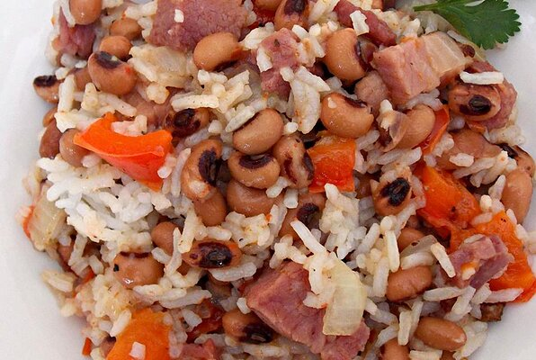

Black-eyed Peas and Rice

This is my preferred plate
The Black-eyed Peas and Rice is the one of the plates to eat to avoid dying from starvation
and keeping yourself full for almost a whole day.
You will gain:274 calories; protein 12.6g; carbohydrates 41.7g; fat 6.4g; cholesterol 10.6mg; sodium 277.5mg
Ingredients
- 1 cup dried black-eyed peas
- 1 tablespoon olive oil
- 1 cup lean oliced ham
- 1 onion,chopped
- 1/2 cup chopped green bell pepper
- 1 clove garlic,minced
- 2 cups water
- 2 bay leaves
- 2 pinches paprika,or more to taste
- salt and ground black pepper to taste
- 3 cups cooked rice
Steps
-
Place the black-eyed peas into a large container and cover with several inches of cool water;
let stand 8 hours to overnight.Drain and rinse.
-
Heat the olive oil in a pot over medium heat;cook and stir ham until browned,
about 5 minutes.
Add onion,green bell pepper,and garlic;saute until onion is tender,about 10 minutes.
Add black-eyed peas, water, bay leaves, paprika, salt, and black pepper; cover pot with a lid and simmer until peas are
tender, 40 to 50 minutes.
-
Remove bay leaves from black-eyed peas mixture and stir in rice.
Simmer until all the liquid is evaporated, 5 to 10 more minutes.
Back to top